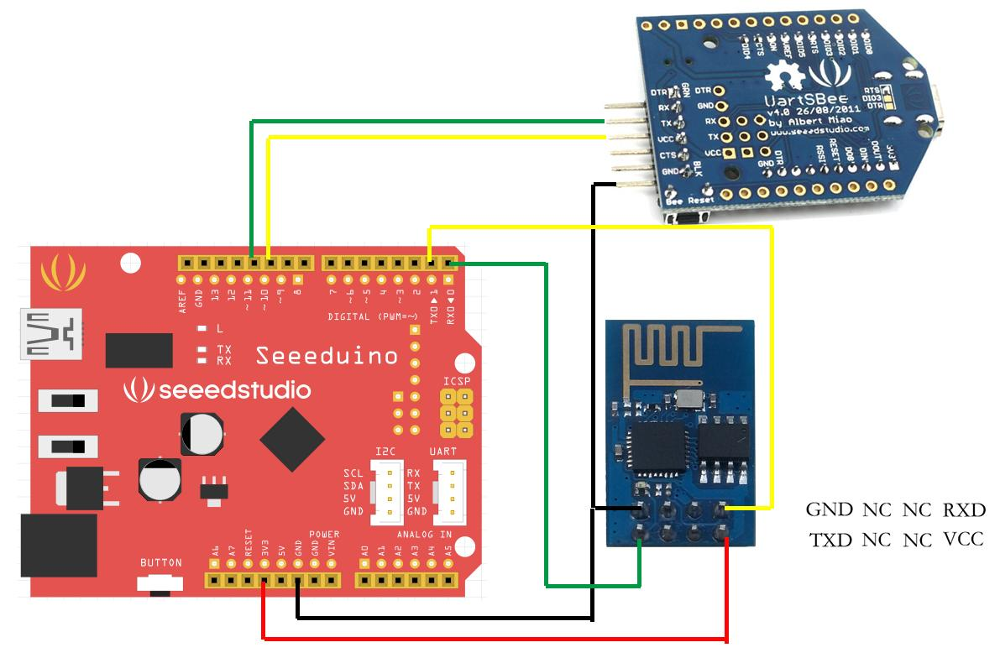
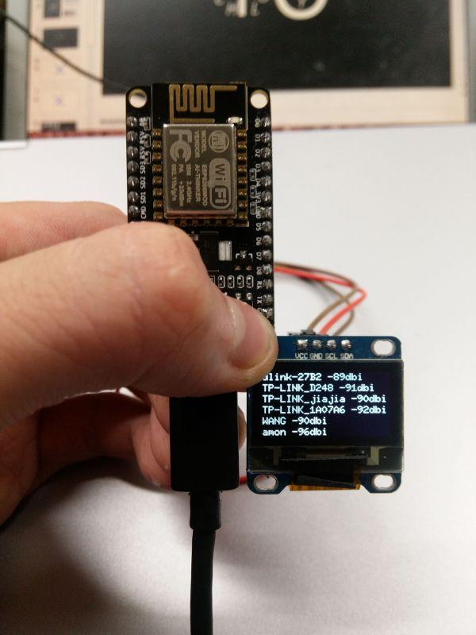
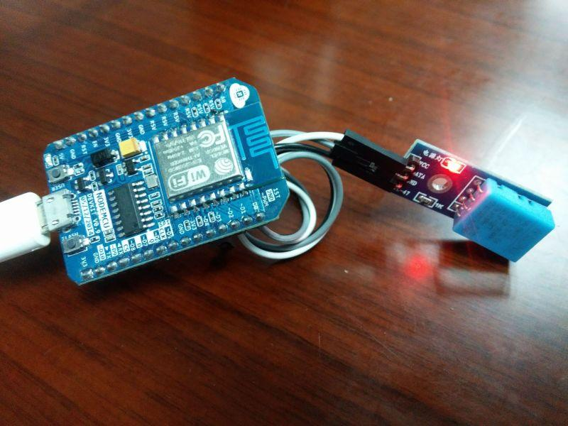

In this tutorial, we'll use a seeeduino to control the ESP8266 WiFi module to request a static page from the internet. This is a basic use of TCP socket, for other usage, please refer to the AT command guide of the module.
Material list:
Seeeduino V3 / Arduino Uno ESP8266 Serial WiFi module UartSBee v4 / other USB to TTL converter
Note： We used a software serial to print some debugging information as there’s only one hardware serial on seeeduino board. But the limitation of software serial is that it can’t communicate in a higher baud rate than 19200. So part of the output from ESP module will be dropped because the baud rate 57600 of ESP module is higher than that of the software serial. If you have a board with more than one hardware serial (e.g. Arduino Mega 2560), the case will be easier.
Step 1: connect module as the following picture

Step 2: Programe the seeeduino board.
#include <SoftwareSerial.h>
#define SSID "xxxxxxxx"
#define PASS "xxxxxxxx"
#define DST_IP "220.181.111.85" //baidu.com
SoftwareSerial dbgSerial(10, 11); // RX, TX
void setup()
{
// Open serial communications and wait for port to open:
Serial.begin(57600);
Serial.setTimeout(5000);
dbgSerial.begin(9600); //can't be faster than 19200 for softserial
dbgSerial.println("ESP8266 Demo");
//test if the module is ready
Serial.println("AT+RST");
delay(1000);
if(Serial.find("ready"))
{
dbgSerial.println("Module is ready");
}
else
{
dbgSerial.println("Module have no response.");
while(1);
}
delay(1000);
//connect to the wifi
boolean connected=false;
for(int i=0;i<5;i++)
{
if(connectWiFi())
{
connected = true;
break;
}
}
if (!connected){while(1);}
delay(5000);
//print the ip addr
/*Serial.println("AT+CIFSR");
dbgSerial.println("ip address:");
while (Serial.available())
dbgSerial.write(Serial.read());*/
//set the single connection mode
Serial.println("AT+CIPMUX=0");
}
void loop()
{
String cmd = "AT+CIPSTART=\"TCP\",\"";
cmd += DST_IP;
cmd += "\",80";
Serial.println(cmd);
dbgSerial.println(cmd);
if(Serial.find("Error")) return;
cmd = "GET / HTTP/1.0\r\n\r\n";
Serial.print("AT+CIPSEND=");
Serial.println(cmd.length());
if(Serial.find(">"))
{
dbgSerial.print(">");
}else
{
Serial.println("AT+CIPCLOSE");
dbgSerial.println("connect timeout");
delay(1000);
return;
}
Serial.print(cmd);
delay(2000);
//Serial.find("+IPD");
while (Serial.available())
{
char c = Serial.read();
dbgSerial.write(c);
if(c=='\r') dbgSerial.print('\n');
}
dbgSerial.println("====");
delay(1000);
}
boolean connectWiFi()
{
Serial.println("AT+CWMODE=1");
String cmd="AT+CWJAP=\"";
cmd+=SSID;
cmd+="\",\"";
cmd+=PASS;
cmd+="\"";
dbgSerial.println(cmd);
Serial.println(cmd);
delay(2000);
if(Serial.find("OK"))
{
dbgSerial.println("OK, Connected to WiFi.");
return true;
}else
{
dbgSerial.println("Can not connect to the WiFi.");
return false;
}
}
Step 3: Open Serial Monitor and press the reset button of seeeduino board, you’ll see the output.
At last, Happy Hakcing! :)
Recipe Community is an awesome place where makers share their amazing works here. Our makers have made a lot of awesome projects with esp8266, check this out!

Build your own Wifi Scanner with few simple steps, all you need to do is prepare:
So, why not make one for yourself?

An online Temperature&Humidity Monitor made with:
Another easy trick, why not make one for yourself?
Na, not enough? More Awesome Projects with ESP8266.
Even more Awesome Projects On Recipe.
Copyright (c) 2008-2016 Seeed Development Limited (www.seeedstudio.com / www.seeed.cc)